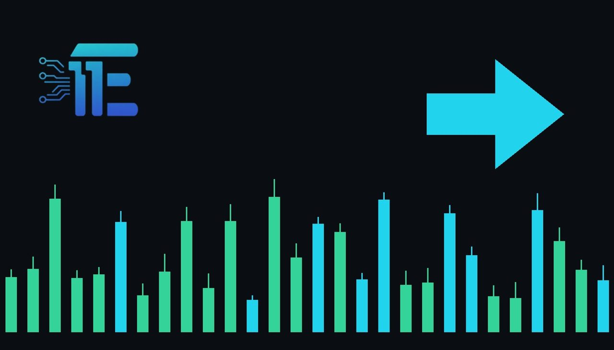

CNBC Survey Shows 93% Expect Fed Pause This Weekការស្ទង់មតិ CNBC បង្ហាញថា 93% រំពឹងថា Fed នឹងផ្អាកការដំឡើងអត្រាការប្រាក់សប្តាហ៍នេះ
XAU/USD impact: ● Neutralផលប៉ះពាល់លើ XAU/USD: ● អព្យាក្រឹត

A new CNBC survey indicates that 93% of respondents anticipate the Federal Reserve will pause rate hikes at this week's meeting. This widespread expectation helps shape market positioning and short-term sentiment for XAU/USD traders.
ការស្ទង់មតិថ្មីមួយបង្ហាញថា 93% នៃអ្នកឆ្លើយតបរំពឹងថា ធនាគារកណ្តាល Fed នឹងផ្អាកការដំឡើងអត្រាការប្រាក់ក្នុងកិច្ចប្រជុំសប្តាហ៍នេះ។ ការរំពឹងទុកនេះជួយកំណត់ជំហរទីផ្សារ និងអារម្មណ៍ពាណិជ្ជកម្មសម្រាប់អ្នកជួញដូរ XAU/USD។
According to the latest CNBC Fed Survey, an overwhelming 93% of respondents expect the Federal Reserve to implement a pause at its policy meeting taking place this week. While market participants acknowledge that future rate hikes remain a possibility down the road, the immediate focus centers on the anticipated decision to hold rates steady.
CNBC បានបង្ហាញថា 93% នៃអ្នកចូលរួមរំពឹងថា ធនាគារកណ្តាល Fed នឹងសម្រេចចិត្តផ្អាកការដំឡើងអត្រាការប្រាក់នៅក្នុងកិច្ចប្រជុំគោលនយោបាយដែលប្រព្រឹត្តទៅនៅសប្តាហ៍នេះ។ ទោះបីជាមានការរំពឹងទុកថាលទ្ធភាពនៃការដំឡើងអត្រាការប្រាក់នៅតែអាចកើតមាននាពេលអនាគតក៏ដោយ ប៉ុន្តែការយកចិត្តទុកដាក់ជាបន្ទាន់គឺផ្តោតលើការសម្រេចចិត្តរក្សាអត្រាការប្រាក់ឱ្យនៅដដែលជាបណ្តោះអាសន្ន។
For XAU/USD, interest rate expectations serve as a primary transmission channel. When the central bank pauses its tightening cycle, shifting rate projections can influence the US dollar and real yields. Lower yield pressures typically support non-yielding assets like gold, whereas persistent hawkish signals tend to strengthen the currency and weigh on bullion.
សម្រាប់ XAU/USD ការរំពឹងទុកលើអត្រាការប្រាក់គឺជាបណ្តាញបញ្ជូនដ៏សំខាន់មួយ។ នៅពេលដែលធនាគារកណ្តាលផ្អាកវដ្តរឹតបន្តឹងរបស់ខ្លួន ការផ្លាស់ប្តូរការរំពឹងទុកលើអត្រាការប្រាក់អាចជះឥទ្ធិពលដល់តម្លៃដុល្លារអាមេរិក និងទិន្នផលរដ្ឋបាល។ សម្ពាធទិន្នផលទាបជាទូទៅគាំទ្រដល់ទ្រព្យសកម្មដែលមិនផ្តល់ការប្រាក់ដូចជាមាស និងដាក់សម្ពាធលើមាស។
Looking at potential market scenarios, a confirmed pause accompanied by cautious commentary regarding future policy could support gold if it weakens the US dollar or eases bond yields. Conversely, if policymakers signal that further tightening remains on the table despite the pause, the resulting strength in the dollar and yields could pressure the precious metal.
ចំពោះសេណារីយ៉ូទីផ្សារដែលអាចកើតមាន ការផ្អាកដែលត្រូវបានបញ្ជាក់ដោយមានការអត្ថាធិប្បាយប្រុងប្រយ័ត្នអាចគាំទ្រដល់មាស ប្រសិនបើវាធ្វើឱ្យដុល្លារអាមេរិកចុះខ្សោយ ឬកាត់បន្ថយទិន្នផលប័ណ្ណបំណុល។ ផ្ទុយទៅវិញ ប្រសិនបើអ្នក policymaker ផ្ញើសញ្ញាថាការរឹតបន្តឹងបន្ថែមទៀតនៅតែអាចកើតមាន ទោះបីជាមានការផ្អាកក៏ដោយ កម្លាំងដុល្លារ និងទិន្នផលដែលកើនឡើងអាចដាក់សម្ពាធលើលោហៈមានតម្លៃនេះ។
Traders should monitor the official FOMC statement, press conference remarks, and subsequent economic data releases for any clues about the central bank's upcoming trajectory. Keeping a close watch on the US dollar index and Treasury yields will help clarify short-term directional impulses for XAU/USD.
អ្នកជួញដូរគួរតែតាមដានសេចក្តីថ្លែងការណ៍ផ្លូវការរបស់ FOMC ការថ្លែងសន្និសីទកាសែត និងទិន្នួលសេដ្ឋកិច្ចបន្ទាប់ ដើម្បីស្វែងរកតម្រុយអំពីគន្លងគោលនយោបាយរបស់ធនាគារកណ្តាល។ ការតាមដានយ៉ាងដិតដល់នូវសន្ទស្សន៍ដុល្លារអាមេរិក និងទិន្នផលរដ្ឋបាលនឹងជួយឱ្យការវិភាគលើទិសដៅរបស់ XAU/USD កាន់តែច្បាស់លាស់។
Key takeawaysចំណុចសំខាន់ៗ
- A CNBC survey reveals that 93% of respondents expect the Federal Reserve to pause rate hikes at this week's meeting.
- ការស្ទង់មតិ CNBC បង្ហាញថា 93% នៃអ្នកឆ្លើយតបរំពឹងថា Fed នឹងផ្អាកការដំឡើងអត្រាការប្រាក់ក្នុងសប្តាហ៍នេះ។
- Interest rate expectations directly impact XAU/USD by influencing the US dollar, bond yields, and overall market sentiment.
- ការរំពឹងទុកលើអត្រាការប្រាក់ជះឥទ្ធិពលផ្ទាល់ដល់ XAU/USD តាមរយៈដុល្លារអាមេរិក ទិន្នផលប័ណ្ណបំណុល និងអារម្មណ៍ទីផ្សារ។
- Traders should monitor the official policy announcement, press conference remarks, and subsequent economic releases for further direction.
- អ្នកជួញដូរគួរតែតាមដានសេចក្តីប្រកាសគោលនយោបាយ សន្និសីទកាសែត និងទិន្នន័យសេដ្ឋកិច្ចសម្រាប់ទិសដៅបន្ត។
Original commentary by THE MARKET CODE, based on public reporting from Economy. Written with the help of AI. Educational only, not financial advice.
មតិវិភាគដើមដោយ THE MARKET CODE ផ្អែកលើការរាយការណ៍សាធារណៈពី Economy។ សរសេរដោយមានជំនួយពី AI។ មាតិកាអប់រំប៉ុណ្ណោះ មិនមែនជាដំបូន្មានហិរញ្ញវត្ថុទេ។